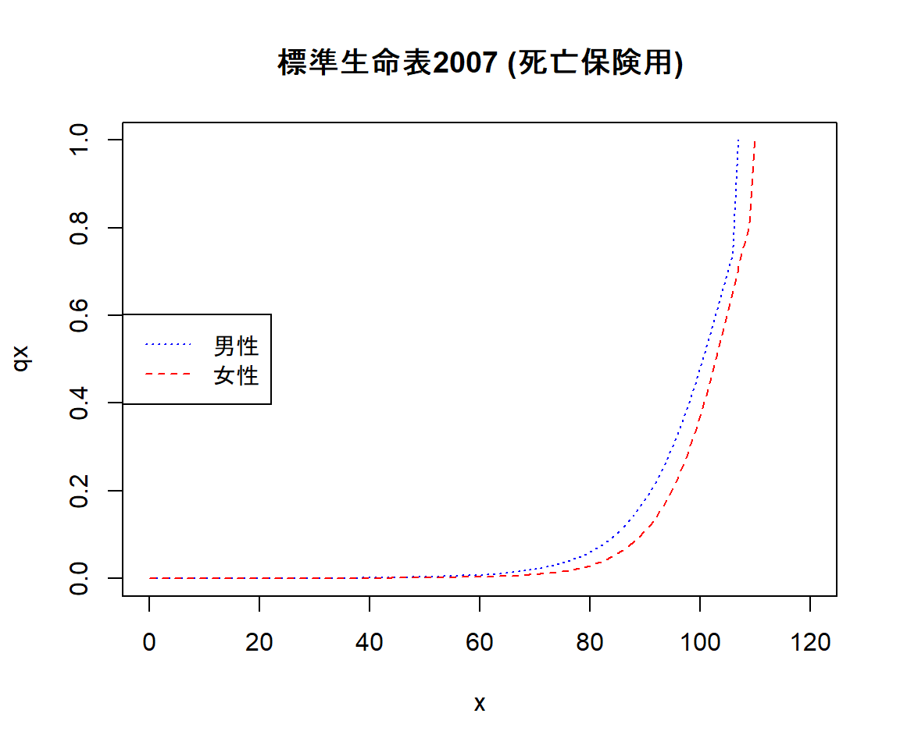
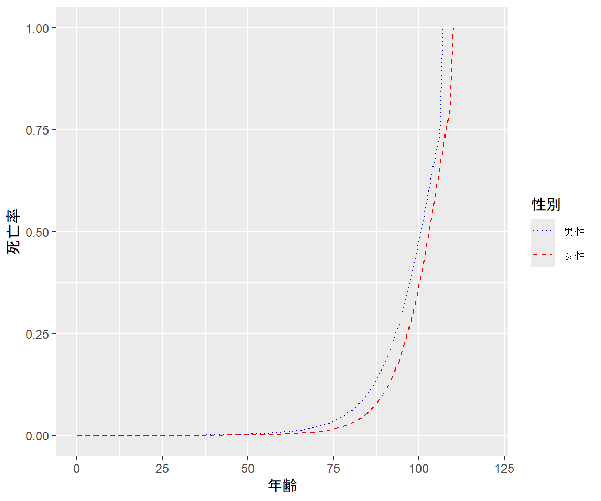

readxl
パッケージの概要
readxlはExcelブックをRで読み込むためのパッケージです。 列名やデータ型をある程度自動で判定し、テーブルの形で(data.frame型として)データを読み込むことが出来ます。 読み取りたい領域をセル番地等で指定することも可能です。
※Excelブックの編集・書き込みは本パッケージではできないため、openxlsxパッケージなどの他のパッケージを使用してください。
実行前の準備
library(readxl)データの準備
readxlパッケージには例となるExcelブックがいくつか用意されています。
readxl_example関数を引数無しで実行することでブックのリストが得られます。
readxl_example() [1] "clippy.xls" "clippy.xlsx" "datasets.xls" "datasets.xlsx"
[5] "deaths.xls" "deaths.xlsx" "geometry.xls" "geometry.xlsx"
[9] "type-me.xls" "type-me.xlsx" 引数にブック名を指定することでフルパスが得られます。 ここではirisデータセットなどが含まれるdatasets.xlsxを使用することにします。
path_datasets <- readxl_example("datasets.xlsx")また、日本アクチュアリー会のホームページで公開されている標準生命表のExcelファイルも例として使用します。
path_seimeihyo <- "../data/seimeihyo960718.xlsx"基本的な使い方
シート名の取得
excel_sheets関数でブックに含まれるシートの一覧を取得することができます。
excel_sheets(path_datasets)[1] "mtcars" "chickwts" "quakes" excel_sheets(path_seimeihyo)[1] "標準生命表"シートの読み取り
read_excel関数で、指定したシートのデータをdata.frame(正確にはtibble)として読み込むことが出来ます。
df <- read_excel(path_seimeihyo, sheet = "標準生命表")
str(df) #テーブルの構造を表示するtibble [133 × 15] (S3: tbl_df/tbl/data.frame)
$ ...1 : chr [1:133] "年齢" NA "0" "1" ...
$ 標準生命表２０１８ : chr [1:133] "生保標準生命表２０１８（死亡保険用）" "男性" "8.1000000000000006E-4" "5.6000000000000006E-4" ...
$ ...3 : chr [1:133] NA "女性" "7.7999999999999999E-4" "5.2999999999999998E-4" ...
$ ...4 : chr [1:133] "第三分野標準生命表２０１８" "男性" "5.2999999999999998E-4" "2.2000000000000001E-4" ...
$ ...5 : chr [1:133] NA "女性" "5.1999999999999995E-4" "2.0000000000000001E-4" ...
$ 標準生命表２００７ : chr [1:133] "生保標準生命表２００７（死亡保険用）" "男性" "1.08E-3" "7.5000000000000002E-4" ...
$ ...7 : chr [1:133] NA "女性" "9.6000000000000002E-4" "6.6E-4" ...
$ ...8 : chr [1:133] "生保標準生命表２００７（年金開始後用）" "男性" "5.8E-4" "2.5999999999999998E-4" ...
$ ...9 : chr [1:133] NA "女性" "4.6999999999999999E-4" "2.2000000000000001E-4" ...
$ ...10 : chr [1:133] "第三分野標準生命表２００７" "男性" "5.8E-4" "4.0999999999999999E-4" ...
$ ...11 : chr [1:133] NA "女性" "5.1000000000000004E-4" "3.6000000000000002E-4" ...
$ 生保標準生命表１９９６: chr [1:133] "生保標準生命表１９９６（死亡保険用）" "男性" "1.1000000000000001E-3" "7.6000000000000004E-4" ...
$ ...13 : chr [1:133] NA "女性" "9.3999999999999997E-4" "6.8999999999999997E-4" ...
$ ...14 : chr [1:133] "生保標準生命表１９９６（年金開始後用）" "男性" NA NA ...
$ ...15 : chr [1:133] NA "女性" NA NA ...#$ 列名 : 型名 [1:行数] 最初の方のデータ… という形式で表示デフォルトではデータがある領域全体を一つのテーブルとし、さらに1行目に列名があるものとみなして読み取られます。
標準生命表のExcelファイルは列名が3行にわたっているため、1, 2行目のレコードにまで列名が入ってしまいました。 また、副次的にすべての列が文字列型(chr)で読み込まれてしまっているため、このままでは数値データとして取り扱うことができません。
最もシンプルな解決策は読み取り領域を指定することです。
df_qx <- read_excel(path_seimeihyo, sheet = "標準生命表", range = "G4:H135") #生保標準2007 死亡保険用
#読み取り範囲をG4(列名として「男性」「女性」がある行)からとしていることに注意
str(df_qx)tibble [131 × 2] (S3: tbl_df/tbl/data.frame)
$ 男性: num [1:131] 0.00108 0.00075 0.00049 0.00031 0.00021 0.00017 0.00016 0.00016 0.00016 0.00015 ...
$ 女性: num [1:131] 0.00096 0.00066 0.00042 0.00026 0.00016 0.00012 0.00012 0.00012 0.00011 0.0001 ...列名がレコードに混じる現象が解消され、また型の自動判定により数値型(num)として読み込むことができました。
このままでも使えなくはありませんが、年齢の列が失われているのは使いづらいため、これを別途読み込んで追加してみます。
引数col_namesに列名を与えることができます。この場合、1行目から列名ではなくレコードがあるものとして読み込みます。
df_x <- read_excel(path_seimeihyo, sheet = "標準生命表", range = "B5:B135", col_names = c("年齢"))
#読み取り範囲をB4からではなくB5(データがある行)からとしていることに注意
str(df_x)tibble [131 × 1] (S3: tbl_df/tbl/data.frame)
$ 年齢: num [1:131] 0 1 2 3 4 5 6 7 8 9 ...cbind関数で結合することにより、年齢と死亡率を1つのテーブルに格納することができました。
df <- cbind(df_x, df_qx)
str(df)'data.frame': 131 obs. of 3 variables:
$ 年齢: num 0 1 2 3 4 5 6 7 8 9 ...
$ 男性: num 0.00108 0.00075 0.00049 0.00031 0.00021 0.00017 0.00016 0.00016 0.00016 0.00015 ...
$ 女性: num 0.00096 0.00066 0.00042 0.00026 0.00016 0.00012 0.00012 0.00012 0.00011 0.0001 ...補足情報
グラフの確認
本稿の主題からは逸れますが、折角生命表を読み込んだので折れ線グラフを描いて確認してみましょう。
plot(0, 0, type = "n", main = "標準生命表2007 (死亡保険用)", xlab = "x", ylab = "qx", xlim = c(0,120), ylim = c(0,1))#plot関数で描画エリアを用意
cols <- c(rgb(0,0,1), rgb(1,0,0)) #色の指定を変数に格納 青, 赤の順で指定
ltys <- c("dotted", "dashed") #線の種類を変数に格納 点線、破線の順で指定
lines(x = df$年齢, y = df$男性, col = cols[1], lty = ltys[1]) #折れ線を1つずつ追加
lines(x = df$年齢, y = df$女性, col = cols[2], lty = ltys[2])
legend("left", legend = c("男性", "女性"), col = cols, lty = ltys) #凡例を左側に表示
記法が独特なものの、ggplot2パッケージを用いる方法もあります。
library(ggplot2)
library(reshape2) #テーブルを縦長に変形するために使用
df_melt <- reshape2::melt(df, id.vars = "年齢", measure.vars = c("男性", "女性"),
value.name = "死亡率", variable.name = "性別") #男性と女性のデータが縦に並ぶようにする
str(df_melt)'data.frame': 262 obs. of 3 variables:
$ 年齢 : num 0 1 2 3 4 5 6 7 8 9 ...
$ 性別 : Factor w/ 2 levels "男性","女性": 1 1 1 1 1 1 1 1 1 1 ...
$ 死亡率: num 0.00108 0.00075 0.00049 0.00031 0.00021 0.00017 0.00016 0.00016 0.00016 0.00015 ...ggplot(data = df_melt) + geom_line(mapping = aes(x = 年齢, y = 死亡率, color = 性別, linetype = 性別)) +
scale_x_continuous(limits = c(0, 120)) + #表示範囲の調節
scale_color_manual(values = c(rgb(0,0,1), rgb(1,0,0))) + #折れ線の見た目を1つ前のグラフと同様に設定
scale_linetype_manual(values = c("dotted", "dashed"))
Rによるデータ可視化方法についてはアクチュアリージャーナルにも記載があります。 詳しくは データサイエンス関連基礎調査WG (2020) を参照してください。
読み取り範囲の指定方法
セル番地での指定が最もわかりやすいですが、他の指定方法もあるため紹介します。
- 引数
sheetではシート名だけでなくシート番号で指定することもできます。 - 引数
rangeの指定には、行全体を表すcell_rowsや列全体を表すcell_colsを用いることができます。
df_ <- read_excel(path_seimeihyo, sheet = 1, range = cell_cols(c(2:4))) #2～4列目全体を取得
str(df_)tibble [133 × 3] (S3: tbl_df/tbl/data.frame)
$ ...1 : chr [1:133] "年齢" NA "0" "1" ...
$ 標準生命表２０１８: chr [1:133] "生保標準生命表２０１８（死亡保険用）" "男性" "8.1000000000000006E-4" "5.6000000000000006E-4" ...
$ ...3 : chr [1:133] NA "女性" "7.7999999999999999E-4" "5.2999999999999998E-4" ...df_ <- read_excel(path_seimeihyo, sheet = 1, range = cell_rows(c(4, NA))) #4行目以降を取得
str(df_)tibble [131 × 15] (S3: tbl_df/tbl/data.frame)
$ ...1 : num [1:131] 0 1 2 3 4 5 6 7 8 9 ...
$ 男性...2 : num [1:131] 0.00081 0.00056 0.00036 0.00022 0.00014 0.0001 0.00009 0.00009 0.00009 0.00009 ...
$ 女性...3 : num [1:131] 0.00078 0.00053 0.00033 0.00019 0.00011 0.00008 0.00008 0.00008 0.00007 0.00007 ...
$ 男性...4 : num [1:131] 0.00053 0.00022 0.00015 0.00011 0.00008 0.00006 0.00006 0.00006 0.00005 0.00005 ...
$ 女性...5 : num [1:131] 0.00052 0.0002 0.00014 0.00009 0.00007 0.00006 0.00005 0.00005 0.00004 0.00004 ...
$ 男性...6 : num [1:131] 0.00108 0.00075 0.00049 0.00031 0.00021 0.00017 0.00016 0.00016 0.00016 0.00015 ...
$ 女性...7 : num [1:131] 0.00096 0.00066 0.00042 0.00026 0.00016 0.00012 0.00012 0.00012 0.00011 0.0001 ...
$ 男性...8 : num [1:131] 0.00058 0.00026 0.0002 0.00014 0.00011 0.00009 0.00009 0.00007 0.00006 0.00006 ...
$ 女性...9 : num [1:131] 0.00047 0.00022 0.00015 0.0001 0.00007 0.00006 0.00006 0.00005 0.00004 0.00004 ...
$ 男性...10: num [1:131] 0.00058 0.00041 0.00026 0.00017 0.00011 0.00009 0.00009 0.00008 0.00008 0.00007 ...
$ 女性...11: num [1:131] 0.00051 0.00036 0.00023 0.00014 0.00009 0.00007 0.00007 0.00006 0.00006 0.00006 ...
$ 男性...12: num [1:131] 0.0011 0.00076 0.0005 0.00033 0.00024 0.00022 0.00022 0.00021 0.00019 0.00017 ...
$ 女性...13: num [1:131] 0.00094 0.00069 0.00048 0.00031 0.0002 0.00014 0.00013 0.00013 0.00013 0.00012 ...
$ 男性...14: num [1:131] NA NA NA NA NA NA NA NA NA NA ...
$ 女性...15: num [1:131] NA NA NA NA NA NA NA NA NA NA ...- シート名の指定を引数
rangeに含めることもできます
df_ <- read_excel(path_seimeihyo, range = "標準生命表!B4:D135")
str(df_)tibble [131 × 3] (S3: tbl_df/tbl/data.frame)
$ ...1: num [1:131] 0 1 2 3 4 5 6 7 8 9 ...
$ 男性: num [1:131] 0.00081 0.00056 0.00036 0.00022 0.00014 0.0001 0.00009 0.00009 0.00009 0.00009 ...
$ 女性: num [1:131] 0.00078 0.00053 0.00033 0.00019 0.00011 0.00008 0.00008 0.00008 0.00007 0.00007 ...- 引数
rangeでは、anchored(左上のセル番地, c(行数, 列数))という指定が可能です
df_ <- read_excel(path_seimeihyo, sheet = "標準生命表", range = anchored("B4", c(121, 3)))
str(df_)tibble [120 × 3] (S3: tbl_df/tbl/data.frame)
$ ...1: num [1:120] 0 1 2 3 4 5 6 7 8 9 ...
$ 男性: num [1:120] 0.00081 0.00056 0.00036 0.00022 0.00014 0.0001 0.00009 0.00009 0.00009 0.00009 ...
$ 女性: num [1:120] 0.00078 0.00053 0.00033 0.00019 0.00011 0.00008 0.00008 0.00008 0.00007 0.00007 ...- 引数
rangeを指定する代わりに、冒頭の読み飛ばし行数skipと読み取る行数n_maxを指定することもできます。
df_ <- read_excel(path_seimeihyo, sheet = "標準生命表", skip = 3, n_max = 30)
str(df_)tibble [30 × 15] (S3: tbl_df/tbl/data.frame)
$ ...1 : num [1:30] 0 1 2 3 4 5 6 7 8 9 ...
$ 男性...2 : num [1:30] 0.00081 0.00056 0.00036 0.00022 0.00014 0.0001 0.00009 0.00009 0.00009 0.00009 ...
$ 女性...3 : num [1:30] 0.00078 0.00053 0.00033 0.00019 0.00011 0.00008 0.00008 0.00008 0.00007 0.00007 ...
$ 男性...4 : num [1:30] 0.00053 0.00022 0.00015 0.00011 0.00008 0.00006 0.00006 0.00006 0.00005 0.00005 ...
$ 女性...5 : num [1:30] 0.00052 0.0002 0.00014 0.00009 0.00007 0.00006 0.00005 0.00005 0.00004 0.00004 ...
$ 男性...6 : num [1:30] 0.00108 0.00075 0.00049 0.00031 0.00021 0.00017 0.00016 0.00016 0.00016 0.00015 ...
$ 女性...7 : num [1:30] 0.00096 0.00066 0.00042 0.00026 0.00016 0.00012 0.00012 0.00012 0.00011 0.0001 ...
$ 男性...8 : num [1:30] 0.00058 0.00026 0.0002 0.00014 0.00011 0.00009 0.00009 0.00007 0.00006 0.00006 ...
$ 女性...9 : num [1:30] 0.00047 0.00022 0.00015 0.0001 0.00007 0.00006 0.00006 0.00005 0.00004 0.00004 ...
$ 男性...10: num [1:30] 0.00058 0.00041 0.00026 0.00017 0.00011 0.00009 0.00009 0.00008 0.00008 0.00007 ...
$ 女性...11: num [1:30] 0.00051 0.00036 0.00023 0.00014 0.00009 0.00007 0.00007 0.00006 0.00006 0.00006 ...
$ 男性...12: num [1:30] 0.0011 0.00076 0.0005 0.00033 0.00024 0.00022 0.00022 0.00021 0.00019 0.00017 ...
$ 女性...13: num [1:30] 0.00094 0.00069 0.00048 0.00031 0.0002 0.00014 0.00013 0.00013 0.00013 0.00012 ...
$ 男性...14: num [1:30] NA NA NA NA NA NA NA NA NA NA ...
$ 女性...15: num [1:30] NA NA NA NA NA NA NA NA NA NA ...詳細は readxl authors (2023b) や readxl authors (2023c) を参照してください。
列名が複数行にわたる場合
Excelのデータでは今回の標準生命表のように、列名が複数行にわたって表示されることがよくあります。
事前にExcelのデータを修正しておくことも考えられますが、読み込む側の工夫でもある程度対処は可能なため、 参考までに一例を記載します。
readxlパッケージの関数で一発でうまく読み取れるわけではないため、 まず列名がある箇所をいったんデータとして読み取り、Rで加工のうえ列名をリストに保持し、 改めてデータのある箇所を読み取るという流れで対処することになります。
まず、列名がある部分(Excelシート上の3～4行目)をデータとして読み取ります。
#col_names = FALSEとすることにより、1行目を(テーブルdf_colnamesの)列名ではなくデータとして読み取る
df_colnames <- read_excel(path_seimeihyo, sheet = "標準生命表", range = cell_rows(c(3:4)), col_names = FALSE)
str(df_colnames)tibble [2 × 15] (S3: tbl_df/tbl/data.frame)
$ ...1 : chr [1:2] "年齢" NA
$ ...2 : chr [1:2] "生保標準生命表２０１８（死亡保険用）" "男性"
$ ...3 : chr [1:2] NA "女性"
$ ...4 : chr [1:2] "第三分野標準生命表２０１８" "男性"
$ ...5 : chr [1:2] NA "女性"
$ ...6 : chr [1:2] "生保標準生命表２００７（死亡保険用）" "男性"
$ ...7 : chr [1:2] NA "女性"
$ ...8 : chr [1:2] "生保標準生命表２００７（年金開始後用）" "男性"
$ ...9 : chr [1:2] NA "女性"
$ ...10: chr [1:2] "第三分野標準生命表２００７" "男性"
$ ...11: chr [1:2] NA "女性"
$ ...12: chr [1:2] "生保標準生命表１９９６（死亡保険用）" "男性"
$ ...13: chr [1:2] NA "女性"
$ ...14: chr [1:2] "生保標準生命表１９９６（年金開始後用）" "男性"
$ ...15: chr [1:2] NA "女性"今回のデータでは1行目の「生保標準生命表２０１８（死亡保険用）」などがそれぞれ一番左の列（各「男性」の列）にしか入れられていないため、 残りの列（各「女性」の列）にもこれを補完します。
for(row in 1:(nrow(df_colnames))){
colname <- NA #1つ左の列の列名を保持する変数
for(col in 1:(ncol(df_colnames))){
if(row > 1 & col > 1){
if(is.na(df_colnames[row-1, col-1]) != is.na(df_colnames[row-1, col])
|| ( !is.na(df_colnames[row-1, col-1]) && !is.na(df_colnames[row-1, col])
&& df_colnames[row-1, col-1] != df_colnames[row-1, col])){ #1つ上の階層の列名が変わった場合
colname <- NA #今の階層もクリア
}
}
if(is.na(df_colnames[row, col]))
df_colnames[row, col] <- colname
colname <- df_colnames[row, col]
}
}
df_colnames# A tibble: 2 × 15
...1 ...2 ...3 ...4 ...5 ...6 ...7 ...8 ...9 ...10 ...11 ...12 ...13
<chr> <chr> <chr> <chr> <chr> <chr> <chr> <chr> <chr> <chr> <chr> <chr> <chr>
1 年齢 生保標準生… 生保標準… 第三分野… 第三分野… 生保標準… 生保標準… 生保標準… 生保標準… 第三分野… 第三分野… 生保標準… 生保標準…
2 <NA> 男性 女性 男性 女性 男性 女性 男性 女性 男性 女性 男性 女性
# ℹ 2 more variables: ...14 <chr>, ...15 <chr>そして、NAとなっている箇所を読み飛ばしつつ、各列名を結合したリストを作成します。
結合時の区切り文字は何でも指定可能ですが、今回は"/"にしてみます。
ls_colnames <- sapply(df_colnames, function(x) paste0(x[!is.na(x)], collapse = "/"))
names(ls_colnames) <- NULL
ls_colnames [1] "年齢"
[2] "生保標準生命表２０１８（死亡保険用）/男性"
[3] "生保標準生命表２０１８（死亡保険用）/女性"
[4] "第三分野標準生命表２０１８/男性"
[5] "第三分野標準生命表２０１８/女性"
[6] "生保標準生命表２００７（死亡保険用）/男性"
[7] "生保標準生命表２００７（死亡保険用）/女性"
[8] "生保標準生命表２００７（年金開始後用）/男性"
[9] "生保標準生命表２００７（年金開始後用）/女性"
[10] "第三分野標準生命表２００７/男性"
[11] "第三分野標準生命表２００７/女性"
[12] "生保標準生命表１９９６（死亡保険用）/男性"
[13] "生保標準生命表１９９６（死亡保険用）/女性"
[14] "生保標準生命表１９９６（年金開始後用）/男性"
[15] "生保標準生命表１９９６（年金開始後用）/女性"こうしてできた列名リストを引数col_namesに与え、元のデータ(Excelシート上の5行目以降)を読み取ります。
df_all <- read_excel(path_seimeihyo, sheet = "標準生命表", range = cell_rows(c(5, NA)), col_names = ls_colnames)
str(df_all)tibble [131 × 15] (S3: tbl_df/tbl/data.frame)
$ 年齢 : num [1:131] 0 1 2 3 4 5 6 7 8 9 ...
$ 生保標準生命表２０１８（死亡保険用）/男性 : num [1:131] 0.00081 0.00056 0.00036 0.00022 0.00014 0.0001 0.00009 0.00009 0.00009 0.00009 ...
$ 生保標準生命表２０１８（死亡保険用）/女性 : num [1:131] 0.00078 0.00053 0.00033 0.00019 0.00011 0.00008 0.00008 0.00008 0.00007 0.00007 ...
$ 第三分野標準生命表２０１８/男性 : num [1:131] 0.00053 0.00022 0.00015 0.00011 0.00008 0.00006 0.00006 0.00006 0.00005 0.00005 ...
$ 第三分野標準生命表２０１８/女性 : num [1:131] 0.00052 0.0002 0.00014 0.00009 0.00007 0.00006 0.00005 0.00005 0.00004 0.00004 ...
$ 生保標準生命表２００７（死亡保険用）/男性 : num [1:131] 0.00108 0.00075 0.00049 0.00031 0.00021 0.00017 0.00016 0.00016 0.00016 0.00015 ...
$ 生保標準生命表２００７（死亡保険用）/女性 : num [1:131] 0.00096 0.00066 0.00042 0.00026 0.00016 0.00012 0.00012 0.00012 0.00011 0.0001 ...
$ 生保標準生命表２００７（年金開始後用）/男性: num [1:131] 0.00058 0.00026 0.0002 0.00014 0.00011 0.00009 0.00009 0.00007 0.00006 0.00006 ...
$ 生保標準生命表２００７（年金開始後用）/女性: num [1:131] 0.00047 0.00022 0.00015 0.0001 0.00007 0.00006 0.00006 0.00005 0.00004 0.00004 ...
$ 第三分野標準生命表２００７/男性 : num [1:131] 0.00058 0.00041 0.00026 0.00017 0.00011 0.00009 0.00009 0.00008 0.00008 0.00007 ...
$ 第三分野標準生命表２００７/女性 : num [1:131] 0.00051 0.00036 0.00023 0.00014 0.00009 0.00007 0.00007 0.00006 0.00006 0.00006 ...
$ 生保標準生命表１９９６（死亡保険用）/男性 : num [1:131] 0.0011 0.00076 0.0005 0.00033 0.00024 0.00022 0.00022 0.00021 0.00019 0.00017 ...
$ 生保標準生命表１９９６（死亡保険用）/女性 : num [1:131] 0.00094 0.00069 0.00048 0.00031 0.0002 0.00014 0.00013 0.00013 0.00013 0.00012 ...
$ 生保標準生命表１９９６（年金開始後用）/男性: num [1:131] NA NA NA NA NA NA NA NA NA NA ...
$ 生保標準生命表１９９６（年金開始後用）/女性: num [1:131] NA NA NA NA NA NA NA NA NA NA ...欠損値への対処
read_excel関数の引数naに文字列を指定することで、その文字列があるセルを欠損値NAとみなして読み込むことが出来ます。 ベクトルを指定することで複数の文字列を指定することもできます。
例えばchichwtsデータセットで文字列"horsebean"と"soybean"をNAとみなして読み込んでみましょう。
df_chick <- read_excel(path_datasets, sheet = "chickwts")
df_chick$feed [1] "horsebean" "horsebean" "horsebean" "horsebean" "horsebean" "horsebean"
[7] "horsebean" "horsebean" "horsebean" "horsebean" "linseed" "linseed"
[13] "linseed" "linseed" "linseed" "linseed" "linseed" "linseed"
[19] "linseed" "linseed" "linseed" "linseed" "soybean" "soybean"
[25] "soybean" "soybean" "soybean" "soybean" "soybean" "soybean"
[31] "soybean" "soybean" "soybean" "soybean" "soybean" "soybean"
[37] "sunflower" "sunflower" "sunflower" "sunflower" "sunflower" "sunflower"
[43] "sunflower" "sunflower" "sunflower" "sunflower" "sunflower" "sunflower"
[49] "meatmeal" "meatmeal" "meatmeal" "meatmeal" "meatmeal" "meatmeal"
[55] "meatmeal" "meatmeal" "meatmeal" "meatmeal" "meatmeal" "casein"
[61] "casein" "casein" "casein" "casein" "casein" "casein"
[67] "casein" "casein" "casein" "casein" "casein" df_chick_na <- read_excel(path_datasets, sheet = "chickwts", na = c("horsebean", "soybean"))
df_chick_na$feed [1] NA NA NA NA NA NA
[7] NA NA NA NA "linseed" "linseed"
[13] "linseed" "linseed" "linseed" "linseed" "linseed" "linseed"
[19] "linseed" "linseed" "linseed" "linseed" NA NA
[25] NA NA NA NA NA NA
[31] NA NA NA NA NA NA
[37] "sunflower" "sunflower" "sunflower" "sunflower" "sunflower" "sunflower"
[43] "sunflower" "sunflower" "sunflower" "sunflower" "sunflower" "sunflower"
[49] "meatmeal" "meatmeal" "meatmeal" "meatmeal" "meatmeal" "meatmeal"
[55] "meatmeal" "meatmeal" "meatmeal" "meatmeal" "meatmeal" "casein"
[61] "casein" "casein" "casein" "casein" "casein" "casein"
[67] "casein" "casein" "casein" "casein" "casein" このように、一定の文字列をNAに変換するだけなら簡単に対処が可能です。